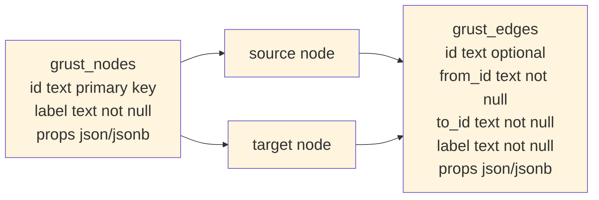

The universal node/edge layout appears in multiple backend plans because it is the easiest way to preserve arbitrary property graphs:

The cost is that property typing and label-specific optimization require extra work. A label-partitioned backend can use stronger types and better indexes, but it needs schema, migrations, and more planning.
Grust’s current architecture keeps both paths open. Core stays universal. Backends choose their storage layout. Schema support can become richer without forcing every backend to look the same.